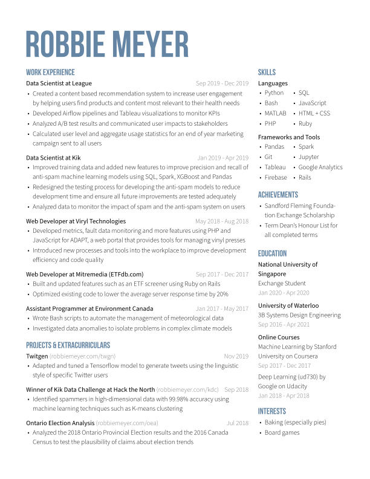

<div class="splash">
  <div>
    
    <div>
      Hi, I'm a Systems Design Engineering Student at the University of Waterloo. I love
      to design and develop solutions for the problems that affect us all.
    </div>
  </div>
</div>

{% include navbar.html %}

<div class='parent-container'>
  <div class='container'>

    {% if site.posts.size > 0 %}
      <span class='home-heading'> Posts </span>
      <div>
        <a href="{{ site.posts[0].url | absolute_path }}"> {{ site.posts[0].title }} </a>
      </div>
    {% endif %}

    <span class='home-heading'> 
      <div id='projects' class='anchor'></div>
      Current Projects 
    </span>
    <div class='card-columns'>
      {% for project in site.projects %}
        {% include project-card.html project=project %} 
      {% endfor %}
    </div>

    <span class='home-heading'>
      <div id='resume' class='anchor'></div>
      Resume
    </span>
    <div id='resume-embed'>
      <a target='_blank' href='assets/resume/resume.pdf' download>
        <i class="far fa-file"></i> &nbsp; PDF Download
      </a>
      
    </div>

  </div>
</div>
